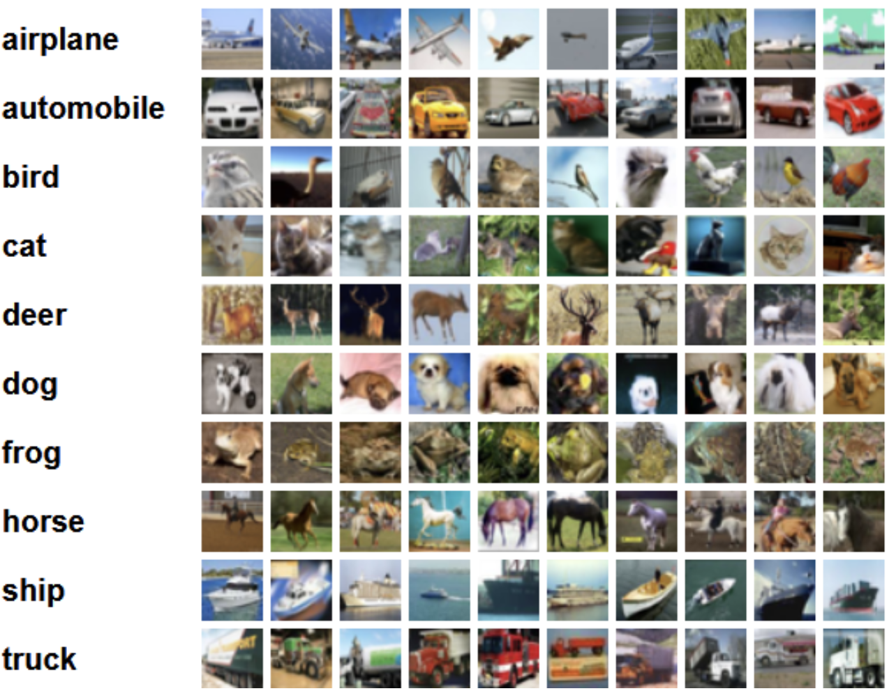
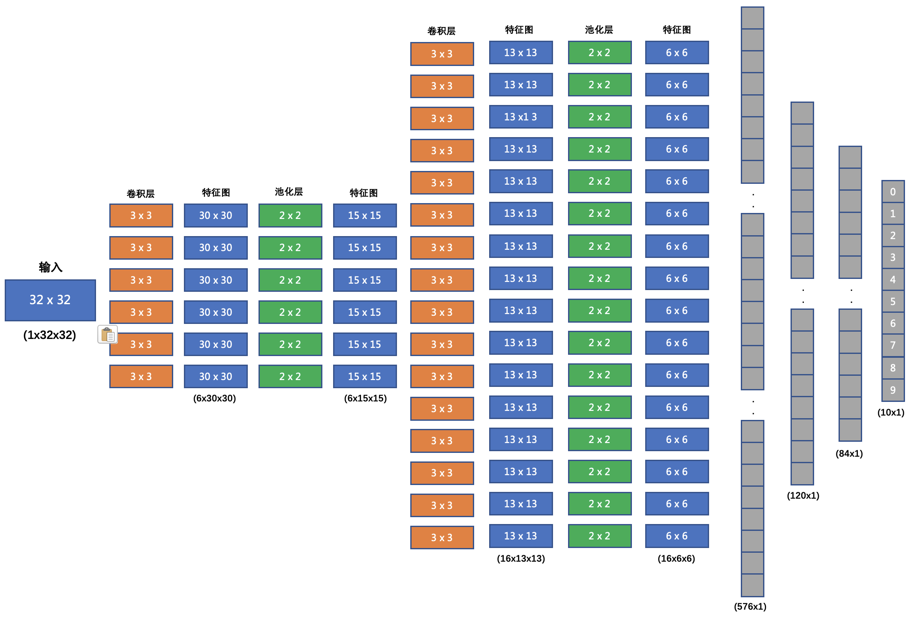

5 案例-图像分类¶
学习目标¶
- 了解CIFAR10数据集
- 掌握分类网络搭建
- 掌握模型构建流程
在本小节，咱们使用前面的学习到的知识来构建一个卷积神经网络, 并训练该网络实现图像分类. 要完成这个案例，咱们需要学习的内容如下:
- 了解 CIFAR10 数据集
- 搭建卷积神经网络
- 编写训练函数
- 编写预测函数
1 CIFAR10 数据集¶
CIFAR-10数据集5万张训练图像、1万张测试图像、10个类别、每个类别有6k个图像，图像大小32×32×3。下图列举了10个类，每一类随机展示了10张图片：

PyTorch 中的 torchvision.datasets 计算机视觉模块封装了 CIFAR10 数据集, 使用方法如下:
from torchvision.datasets import CIFAR10
from torchvision.transforms import Compose
from torchvision.transforms import ToTensor
from torch.utils.data import DataLoader
# 1. 数据集基本信息
def test01():
# 加载数据集
train = CIFAR10(root='data', train=True, transform=Compose([ToTensor()]))
valid = CIFAR10(root='data', train=False, transform=Compose([ToTensor()]))
# 数据集数量
print('训练集数量:', len(train.targets))
print('测试集数量:', len(valid.targets))
# 数据集形状
print("数据集形状:", train[0][0].shape)
# 数据集类别
print("数据集类别:", train.class_to_idx)
# 2. 数据加载器
def test02():
train = CIFAR10(root='data', train=True, transform=Compose([ToTensor()]))
dataloader = DataLoader(train, batch_size=8, shuffle=True)
for x, y in dataloader:
print(x.shape)
print(y)
break
if __name__ == '__main__':
test01()
test02()
程序输出结果:
训练集数量: 50000
测试集数量: 10000
数据集形状: torch.Size([3, 32, 32])
数据集类别: {'airplane': 0, 'automobile': 1, 'bird': 2, 'cat': 3, 'deer': 4, 'dog': 5, 'frog': 6, 'horse': 7, 'ship': 8, 'truck': 9}
torch.Size([8, 3, 32, 32])
tensor([4, 7, 8, 4, 0, 6, 2, 9])
2 搭建图像分类网络¶
我们要搭建的网络结构如下:

- 输入形状: 32x32
- 第一个卷积层输入 3 个 Channel, 输出 6 个 Channel, Kernel Size 为: 3x3
- 第一个池化层输入 30x30, 输出 15x15, Kernel Size 为: 2x2, Stride 为: 2
- 第二个卷积层输入 6 个 Channel, 输出 16 个 Channel, Kernel Size 为 3x3
- 第二个池化层输入 13x13, 输出 6x6, Kernel Size 为: 2x2, Stride 为: 2
- 第一个全连接层输入 576 维, 输出 120 维
- 第二个全连接层输入 120 维, 输出 84 维
- 最后的输出层输入 84 维, 输出 10 维
我们在每个卷积计算之后应用 relu 激活函数来给网络增加非线性因素。
网络代码实现如下:
class ImageClassification(nn.Module):
def __init__(self):
super(ImageClassification, self).__init__()
self.conv1 = nn.Conv2d(3, 6, stride=1, kernel_size=3)
self.pool1 = nn.MaxPool2d(kernel_size=2, stride=2)
self.conv2 = nn.Conv2d(6, 16, stride=1, kernel_size=3)
self.pool2 = nn.MaxPool2d(kernel_size=2, stride=2)
self.linear1 = nn.Linear(576, 120)
self.linear2 = nn.Linear(120, 84)
self.out = nn.Linear(84, 10)
def forward(self, x):
x = F.relu(self.conv1(x))
x = self.pool1(x)
x = F.relu(self.conv2(x))
x = self.pool2(x)
# 由于最后一个批次可能不够 32，所以需要根据批次数量来 flatten
x = x.reshape(x.size(0), -1)
x = F.relu(self.linear1(x))
x = F.relu(self.linear2(x))
return self.out(x)
3 编写训练函数¶
我们的训练时，使用多分类交叉熵损失函数，Adam 优化器. 具体实现代码如下:
def train():
# 加载 CIFAR10 训练集, 并将其转换为张量
transgform = Compose([ToTensor()])
cifar10 = torchvision.datasets.CIFAR10(root='data', train=True, download=True, transform=transgform)
# 构建图像分类模型
model = ImageClassification()
# 构建损失函数
criterion = nn.CrossEntropyLoss()
# 构建优化方法
optimizer = optim.Adam(model.parameters(), lr=1e-3)
# 训练轮数
epoch = 100
for epoch_idx in range(epoch):
# 构建数据加载器
dataloader = DataLoader(cifar10, batch_size=BATCH_SIZE, shuffle=True)
# 样本数量
sam_num = 0
# 损失总和
total_loss = 0.0
# 开始时间
start = time.time()
correct = 0
for x, y in dataloader:
# 送入模型
output = model(x)
# 计算损失
loss = criterion(output, y)
# 梯度清零
optimizer.zero_grad()
# 反向传播
loss.backward()
# 参数更新
optimizer.step()
correct += (torch.argmax(output, dim=-1) == y).sum()
total_loss += (loss.item() * len(y))
sam_num += len(y)
print('epoch:%2s loss:%.5f acc:%.2f time:%.2fs' %
(epoch_idx + 1,
total_loss / sam_num,
correct / sam_num,
time.time() - start))
# 序列化模型
torch.save(model.state_dict(), 'model/image_classification.bin')
4 编写预测函数¶
我们加载训练好的模型，对测试集中的 1 万条样本进行预测，查看模型在测试集上的准确率.
def test():
# 加载 CIFAR10 测试集, 并将其转换为张量
transgform = Compose([ToTensor()])
cifar10 = torchvision.datasets.CIFAR10(root='data', train=False, download=True, transform=transgform)
# 构建数据加载器
dataloader = DataLoader(cifar10, batch_size=BATCH_SIZE, shuffle=True)
# 加载模型
model = ImageClassification()
model.load_state_dict(torch.load('model/image_classification.bin'))
model.eval()
total_correct = 0
total_samples = 0
for x, y in dataloader:
output = model(x)
total_correct += (torch.argmax(output, dim=-1) == y).sum()
total_samples += len(y)
print('Acc: %.2f' % (total_correct / total_samples))
'Acc: 0.57
5 小结¶
本小节主要学习如何使用卷积层、池化层来设计、构建一个卷积神经网络。从程序的运行结果来看，网络模型在测试集上的准确率并不高。我们可以从以下几个方面来调整网络:
- 增加卷积核输出通道数
- 增加全连接层的参数量
- 调整学习率
- 调整优化方法
- 修改激活函数
- 等等...
我把学习率由 1e-3 修改为 1e-4, 并网络参数量增加如下代码所示:
class ImageClassification(nn.Module):
def __init__(self):
super(ImageClassification, self).__init__()
self.conv1 = nn.Conv2d(3, 32, stride=1, kernel_size=3)
self.pool1 = nn.MaxPool2d(kernel_size=2, stride=2)
self.conv2 = nn.Conv2d(32, 128, stride=1, kernel_size=3)
self.pool2 = nn.MaxPool2d(kernel_size=2, stride=2)
self.linear1 = nn.Linear(128 * 6 * 6, 2048)
self.linear2 = nn.Linear(2048, 2048)
self.out = nn.Linear(2048, 10)
def forward(self, x):
x = F.relu(self.conv1(x))
x = self.pool1(x)
x = F.relu(self.conv2(x))
x = self.pool2(x)
# 由于最后一个批次可能不够 32，所以需要根据批次数量来 flatten
x = x.reshape(x.size(0), -1)
x = F.relu(self.linear1(x))
x = F.dropout(x, p=0.5)
x = F.relu(self.linear2(x))
x = F.dropout(x, p=0.5)
return self.out(x)
经过训练，模型在测试集的准确率由 0.57，提升到了 0.93，同学们也可以自己修改相应的网络结构、训练参数等来提升模型的性能。